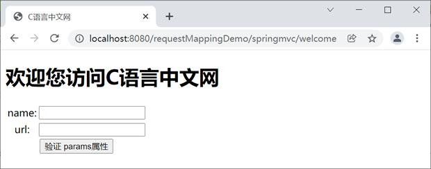
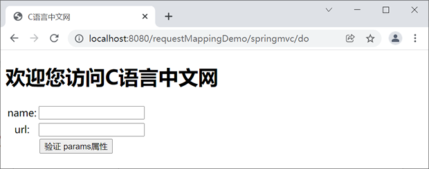
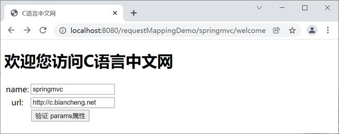
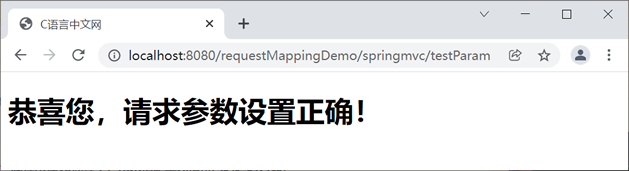
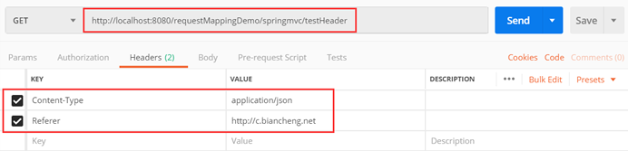
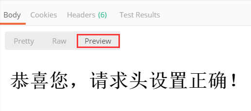

首页 > Spring MVC
Spring MVC @Controller和@RequestMapping注解
从 Java 5 开始，Java 就增加了对注解（Annotation）的支持，它是代码中的一种特殊标记，可以在编译、加载和运行时被读取，执行相应的处理。通过注解，开发人员可以在不改变原有代码逻辑的情况下，在代码中嵌入补充信息。
Spring 从 2.5 版本开始提供了对注解技术的全面支持，以替换传统的 XML 配置，简化 Spring 的配置。作为 Spring 框架的一个子项目， Spring MVC 自然也提供了对注解的支持。
在 Spring MVC 中有两个十分重要的注解，它们分别是 @Controller 和 @RequestMapping 。本节，我们就针对这两个重要 Spring MVC 注解进行讲解。
Spring MVC 是通过组件扫描机制查找应用中的控制器类的，为了保证控制器能够被 Spring MVC 扫描到，我们还需要在 Spring MVC 的配置文件中使用
Spring MVC 的前端控制器（DispatcherServlet）拦截到用户发来的请求后，会通过 @RequestMapping 注解提供的映射信息找到对应的控制器方法，对这个请求进行处理。
例如，在上面的控制类中，用户想要访问 HelloController 中的 welcome() 方法，请求的地址就必须带上父路径“/springmvc”，即请求地址必须为“/springmvc/login”。
value 属性是 @RequestMapping 注解的默认属性，如果我们在 @RequestMapping 注解中只设置了一个 value 属性，则该属性名可以被省略，示例代码如下。
value 属性的取值是一个字符串类型的数组，表示该控制器方法可以匹配多个请求地址。
例如，下面的代码表示 getUsers() 方法是一个用来获取用户信息的控制器方法。
我们可以通过以下 4 种表达式来对请求的参数进行配置。
params 属性的取值是一个字符串类型的数组，表示只有请求中同时携带了 params 属性指定的全部参数时，控制器方法才会对该请求进行处理。
例如，控制器方法 testParam() 的代码如下：
以上代码表示，只有当请求中同时携带 name 和 url 两个请求参数，且参数值必须分别为 “C语言中文网” 和“http://c.biancheng.net”时，控制器方法 testParam() 才会对该请求进行处理 。
我们可以通过以下 4 种表达式来指定请求中的请求头信息。
header 属性是一个字符换类型的数组，表示只有当请求同时携带数组中规定的所有头信息时，控制器方法才会对该请求进行处理。
例如，控制器方法 method() 的代码如下。
在以上代码中，只有当请求的头信息中包含“Referer=http://c.biancheng.net”时，控制器方法 method() 才会处理该请求。
1. 创建一个名为 requestMappingDemo 的 Web 项目，并将 Spring MVC 相关的依赖包都引入到该工程中，web.xml 的配置如下。
2. 在 src 目录下创建一个名为 springMVC.xml 的配置文件，配置内容如下。
3. 在 src 下创建名为 net.biancheng.c.controller 的包，并在该包下创建一个名为 RequestMappingController 的 Controller 类，代码如下。
4. 在 webapp/WEB-INF 下新建一个 templates 目录，并在该目录下创建 welcome.html，代码如下。
5. 在 webapp/WEB-INF/templates 下创建 param.html，代码如下。
6. 在 webapp/templates 下创建 header.html，代码如下。
7. 将 requestMappingDemo 部署到 Tomcat 中，启动 Tomcat 服务器，使用浏览器访问“http://localhost:8080/requestMappingDemo/springmvc/welcome”，结果如下图。
8. 使用浏览器访问“http://localhost:8080/requestMappingDemo/springmvc/do”，结果如下图。
9. 分别在表单中输入 name 为“springmvc”，url 为“http://c.biancheng.net”，如下图。
10. 点击下方的“验证 params 属性”按钮提交表单，结果如下图。
11. 使用 Postman 对“http://localhost:8080/requestMappingDemo/springmvc/testHeader”进行访问，并设置请求头信息如下图。
12. 点击右侧的“Send”按钮，结果如下图。
常用的 Ant 风格的通配符，如下表所示。
Spring 从 2.5 版本开始提供了对注解技术的全面支持，以替换传统的 XML 配置，简化 Spring 的配置。作为 Spring 框架的一个子项目， Spring MVC 自然也提供了对注解的支持。
在 Spring MVC 中有两个十分重要的注解，它们分别是 @Controller 和 @RequestMapping 。本节，我们就针对这两个重要 Spring MVC 注解进行讲解。
@Controller 注解
@Controller 注解可以将一个普通的 Java 类标识成控制器（Controller）类，示例代码如下。
package net.biancheng.controller;
import org.springframework.stereotype.Controller;
@Controller
public class IndexController {
// 处理请求的方法
}
Spring MVC 是通过组件扫描机制查找应用中的控制器类的，为了保证控制器能够被 Spring MVC 扫描到，我们还需要在 Spring MVC 的配置文件中使用
<context:component-scan/> 标签，指定控制器类的基本包（请确保所有控制器类都在基本包及其子包下），示例代码如下。<!-- 使用扫描机制扫描控制器类，控制器类都在net.biancheng.controller包及其子包下 --> <context:component-scan base-package="net.biancheng.controller" />
@RequestMapping 注解
@RequestMapping 注解是 Spring MVC 中最常被用到的注解之一。它通常被标注在控制器方法上，负责将请求与处理请求的控制器方法关联起来，建立映射关系。Spring MVC 的前端控制器（DispatcherServlet）拦截到用户发来的请求后，会通过 @RequestMapping 注解提供的映射信息找到对应的控制器方法，对这个请求进行处理。
@RequestMapping 注解的使用方式
@RequestMapping 既可以标注在控制器类上，也可以标注在控制器方法上。1. 修饰方法
当 @RequestMapping 注解被标注在方法上时，value 属性值就表示访问该方法的 URL 地址。当用户发送过来的请求想要访问该 Controller 下的控制器方法时，请求路径就必须与这个 value 值相同，示例代码如下。
@Controller
public class HelloController {
@RequestMapping("/login")
public String welcome() {
return "login";
}
}
2. 修饰类
当 @RequestMapping 注解标注在控制器类上时，value 属性的取值就是这个控制器类中的所有控制器方法 URL 地址的父路径。也就是说，访问这个 Controller 下的任意控制器方法都需要带上这个父路径。
@Controller
@RequestMapping(value = "/springmvc")
public class HelloController {
@RequestMapping("/login")
public String welcome() {
return "login";
}
}
例如，在上面的控制类中，用户想要访问 HelloController 中的 welcome() 方法，请求的地址就必须带上父路径“/springmvc”，即请求地址必须为“/springmvc/login”。
@RequestMapping 注解的属性
@RequestMapping 注解中提供了多个可用属性，下面我们就对其中几个比较常用的属性进行介绍。1. value 属性
在 @RequestMapping 注解中，value 属性用来设置控制器方法的请求映射地址。所有能够匹配到该请求映射地址的请求，都可以被该控制器方法处理，示例代码如下。@RequestMapping(value = "/register")
value 属性是 @RequestMapping 注解的默认属性，如果我们在 @RequestMapping 注解中只设置了一个 value 属性，则该属性名可以被省略，示例代码如下。
//省略 value 属性名 @RequestMapping( "/register")
value 属性的取值是一个字符串类型的数组，表示该控制器方法可以匹配多个请求地址。
@RequestMapping( value = {"/register", "/login"})
public String success() {
return "success";
}
2. name 属性
name 属性相当于方法的注释，用于解释这个方法是用来干什么的，使方法更易理解。例如，下面的代码表示 getUsers() 方法是一个用来获取用户信息的控制器方法。
@RequestMapping(value = "toUser",name = "获取用户信息")
public String getUsers() {
……
}
3. method 属性
method 属性用来设置控制器方法支持的请求方式。如果一个控制器方法没有设置 @RequestMapping 注解的 method 属性，则说明该控制器方法支持全部请求类型，可以处理所有类型的请求。
method 属性的取值是一个 RequestMethod 类型的数组，表示一个控制器方法支持多种方式的请求，常用的请求方式有 GET、POST、DELETE、PUT 等。
例如，控制器方法只支持 GET 方式的请求，代码如下。
@RequestMapping(value = "/toUser",method = RequestMethod.GET)
我们也可以为同一个控制器方法指定支持多种类型的请求。例如，一个方法既支持 GET 方式的请求，也支持 POST 方式的请求，代码如下。
@RequestMapping(value = "/toUser",method = {RequestMethod.GET,RequestMethod.POST})，
4. params 属性
params 属性用于指定请求中的参数，只有当请求中携带了符合条件的参数时，控制器方法才会对该请求进行处理。我们可以通过以下 4 种表达式来对请求的参数进行配置。
| 序号 | 表达式 | 含义 |
|---|---|---|
| ① | "param" | 请求中必须携带名为 param 的参数 |
| ② | "!param" | 与表达式 ① 的含义完全相反，请求中不能携带名为 param 的参数 |
| ③ | "param=value" | 请求中必须携带名为 param 的参数，且参数的取值必须为：value |
| ④ | "param!=value" | 与表达式 ③ 的含义完全相反，请求中不能携带参数：param = value。 |
params 属性的取值是一个字符串类型的数组，表示只有请求中同时携带了 params 属性指定的全部参数时，控制器方法才会对该请求进行处理。
例如，控制器方法 testParam() 的代码如下：
@RequestMapping(value = "/testParam", params = {"name=C语言中文网", "url=http://c.bianheng.net"})
@ResponseBody
public String testParam() {
return "success";
}
以上代码表示，只有当请求中同时携带 name 和 url 两个请求参数，且参数值必须分别为 “C语言中文网” 和“http://c.biancheng.net”时，控制器方法 testParam() 才会对该请求进行处理 。
5. headers 属性
headers 属性用于设置请求中请求头信息，只有当请求中携带指定的请求头信息时，控制器方法才会处理该请求。我们可以通过以下 4 种表达式来指定请求中的请求头信息。
| 序号 | 表达式 | 含义 |
|---|---|---|
| ① | "header" | 请求必须携带请求头信息：header |
| ② | "!header" | 与表达式 ① 的含义完全相反，请求中不能携带请求头信息：header |
| ③ | "header=value" | 请求中必须携带请求头信息：header=value 。 |
| ④ | "header!=value" | 与表达式 ③ 的含义完全相反，请求中不能携带请求头信息：header=value。 |
header 属性是一个字符换类型的数组，表示只有当请求同时携带数组中规定的所有头信息时，控制器方法才会对该请求进行处理。
例如，控制器方法 method() 的代码如下。
@RequestMapping(value = "toUser",headers = "Referer=http://c.biancheng.net")
public String metnod() {
……
}
在以上代码中，只有当请求的头信息中包含“Referer=http://c.biancheng.net”时，控制器方法 method() 才会处理该请求。
示例
下面，我们就通过一个案例来演示下 @RequestMapping 注解的使用。1. 创建一个名为 requestMappingDemo 的 Web 项目，并将 Spring MVC 相关的依赖包都引入到该工程中，web.xml 的配置如下。
<?xml version="1.0" encoding="UTF-8"?>
<web-app xmlns:xsi="http://www.w3.org/2001/XMLSchema-instance" xmlns="http://xmlns.jcp.org/xml/ns/javaee"
xsi:schemaLocation="http://xmlns.jcp.org/xml/ns/javaee http://xmlns.jcp.org/xml/ns/javaee/web-app_4_0.xsd"
id="WebApp_ID" version="4.0">
<display-name>first-springmvc-demo</display-name>
<!-- 配置SpringMVC的前端控制器，对浏览器发送的请求统一进行处理 -->
<servlet>
<servlet-name>dispatcherServlet</servlet-name>
<servlet-class>org.springframework.web.servlet.DispatcherServlet</servlet-class>
<!--配置 DispatcherServlet 的一个初始化参数：spring mvc 配置文件按的位置和名称-->
<init-param>
<param-name>contextConfigLocation</param-name>
<param-value>classpath:springMVC.xml</param-value>
</init-param>
<load-on-startup>1</load-on-startup>
</servlet>
<servlet-mapping>
<servlet-name>dispatcherServlet</servlet-name>
<url-pattern>/</url-pattern>
</servlet-mapping>
</web-app>
2. 在 src 目录下创建一个名为 springMVC.xml 的配置文件，配置内容如下。
<?xml version="1.0" encoding="UTF-8"?>
<beans xmlns="http://www.springframework.org/schema/beans"
xmlns:xsi="http://www.w3.org/2001/XMLSchema-instance"
xmlns:context="http://www.springframework.org/schema/context"
xmlns:mvc="http://www.springframework.org/schema/mvc"
xsi:schemaLocation="http://www.springframework.org/schema/beans
http://www.springframework.org/schema/beans/spring-beans.xsd
http://www.springframework.org/schema/context
https://www.springframework.org/schema/context/spring-context.xsd http://www.springframework.org/schema/mvc https://www.springframework.org/schema/mvc/spring-mvc.xsd">
<!--开启组件扫描-->
<context:component-scan base-package="net.biancheng.c"></context:component-scan>
<!-- 配置 Thymeleaf 视图解析器 -->
<bean id="viewResolver"
class="org.thymeleaf.spring5.view.ThymeleafViewResolver">
<property name="order" value="1"/>
<property name="characterEncoding" value="UTF-8"/>
<property name="templateEngine">
<bean class="org.thymeleaf.spring5.SpringTemplateEngine">
<property name="templateResolver">
<bean class="org.thymeleaf.spring5.templateresolver.SpringResourceTemplateResolver">
<!-- 视图前缀 -->
<property name="prefix" value="/WEB-INF/templates/"/>
<!-- 视图后缀 -->
<property name="suffix" value=".html"/>
<property name="templateMode" value="HTML5"/>
<property name="characterEncoding" value="UTF-8"/>
</bean>
</property>
</bean>
</property>
</bean>
</beans>
3. 在 src 下创建名为 net.biancheng.c.controller 的包，并在该包下创建一个名为 RequestMappingController 的 Controller 类，代码如下。
package net.biancheng.c.controller;
import org.springframework.stereotype.Controller;
import org.springframework.web.bind.annotation.RequestMapping;
import org.springframework.web.bind.annotation.RequestMethod;
@Controller
@RequestMapping("/springmvc")
public class RequestMappingController {
/**
* @author c语言中文网
* @RequestMapping value、name、method 属性
*/
@RequestMapping(value = {"/welcome", "/do"}, name = "跳转到欢迎页", method = RequestMethod.GET)
public String testValue() {
return "welcome";
}
/**
* @author c语言中文网
* @RequestMapping 注解 params 属性
*/
@RequestMapping(value = "/testParam", params = {"name=springmvc", "url=http://c.biancheng.net"})
public String params() {
return "param";
}
/**
* @author c语言中文网
* @RequestMapping 注解 headers 属性
*/
@RequestMapping(value = "/testHeader", headers = {"Content-Type=application/json", "Referer=http://c.biancheng.net"})
public String headers() {
return "header";
}
}
4. 在 webapp/WEB-INF 下新建一个 templates 目录，并在该目录下创建 welcome.html，代码如下。
<!DOCTYPE html>
<html lang="en" xmlns:th="http://www.thymeleaf.org">
<head>
<meta charset="UTF-8">
<title>C语言中文网</title>
</head>
<body>
<h1 th:text="欢迎您访问C语言中文网"></h1>
<form th:action="@{/springmvc/testParam}" th:method="post">
<table style="text-align: center;">
<tr>
<td>name:</td>
<td><input type="text" name="name" required><br></td>
</tr>
<tr>
<td>url:</td>
<td><input type="text" name="url" required><br></td>
</tr>
<tr>
<td colspan="2">
<input type="submit" value="验证 params属性">
</td>
</tr>
</table>
</form>
</body>
</html>
5. 在 webapp/WEB-INF/templates 下创建 param.html，代码如下。
<!DOCTYPE html>
<html lang="en" xmlns:th="http://www.thymeleaf.org">
<head>
<meta charset="UTF-8">
<title>C语言中文网</title>
</head>
<body>
<h1 th:text="恭喜您，请求参数设置正确！"></h1>
</body>
</html>
6. 在 webapp/templates 下创建 header.html，代码如下。
<!DOCTYPE html>
<html lang="en" xmlns:th="http://www.thymeleaf.org">
<head>
<meta charset="UTF-8">
<title>C语言中文网</title>
</head>
<body>
<h1 th:text="恭喜您，请求头设置正确！"></h1>
</body>
</html>
7. 将 requestMappingDemo 部署到 Tomcat 中，启动 Tomcat 服务器，使用浏览器访问“http://localhost:8080/requestMappingDemo/springmvc/welcome”，结果如下图。

图1：RequestMapping value 属性使用
8. 使用浏览器访问“http://localhost:8080/requestMappingDemo/springmvc/do”，结果如下图。

图2：RequestMapping value 属性使用 2
9. 分别在表单中输入 name 为“springmvc”，url 为“http://c.biancheng.net”，如下图。

图3：输入需要验证的请求参数
10. 点击下方的“验证 params 属性”按钮提交表单，结果如下图。

图4：请求参数设置正确
图4：请求参数设置正确
11. 使用 Postman 对“http://localhost:8080/requestMappingDemo/springmvc/testHeader”进行访问，并设置请求头信息如下图。

图5：Postman 设置请求头
图5：Postman 设置请求头
12. 点击右侧的“Send”按钮，结果如下图。

图6：请求头验证成功
图6：请求头验证成功
支持 Ant 风格的路径
Spring MVC 还提供了对 Ant 风格路径的支持，我们可以在 @RequestMapping 注解的 value 属性中使用 Ant 风格的统配符，来设置请求映射地址。常用的 Ant 风格的通配符，如下表所示。
| 通配符 | 说明 | 请求映射举例 | 匹配的请求地址举例 |
|---|---|---|---|
| ? | 表示任意的单个字符。 | @RequestMapping(value = "/test-user?") |
|
| * | 表示任意的 0 个或多个字符。 | @RequestMapping(value = "/test-user*") |
|
| ** |
表示任意的一层或多层目录。 注意，在使用该通配符时，其使用方式只能时 "/**/xxx"。 |
@RequestMapping(value = "/**/testuser") |
|
关注公众号「站长严长生」，在手机上阅读所有教程，随时随地都能学习。内含一款搜索神器，免费下载全网书籍和视频。

微信扫码关注公众号